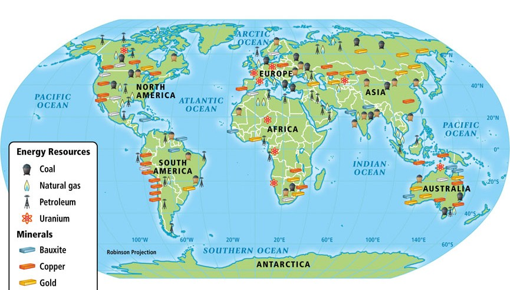

CORRECT!
India houses about 390,000 tons of thorium that can be mined. This is almost about 25% of the world thorium resources, most of which are available in the thorium-rich monazite sands of Kerala beaches. At the present consumption rate, this would be enough to serve the electricity needs of India for the next 500 years.
The Nuke Quiz #4
Question 1
India has world's largest reserves of which of the following resources?
